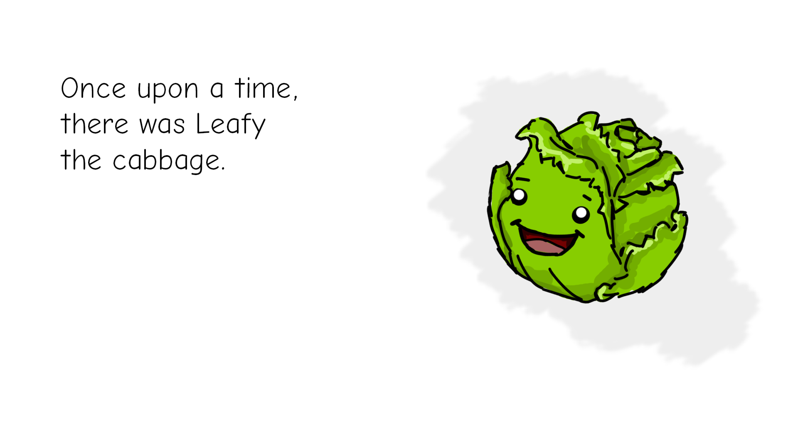
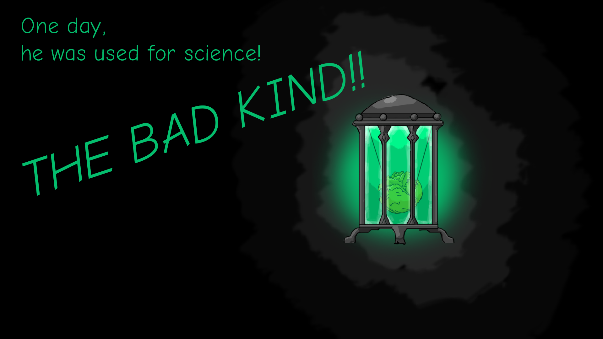
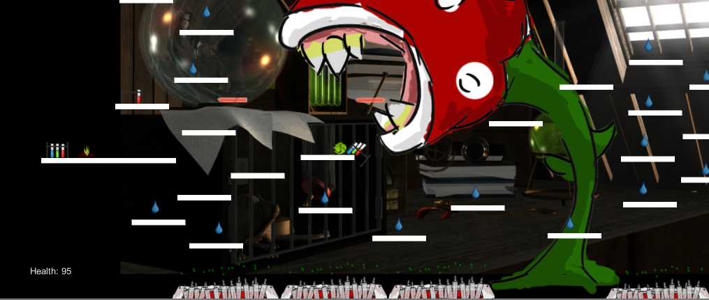
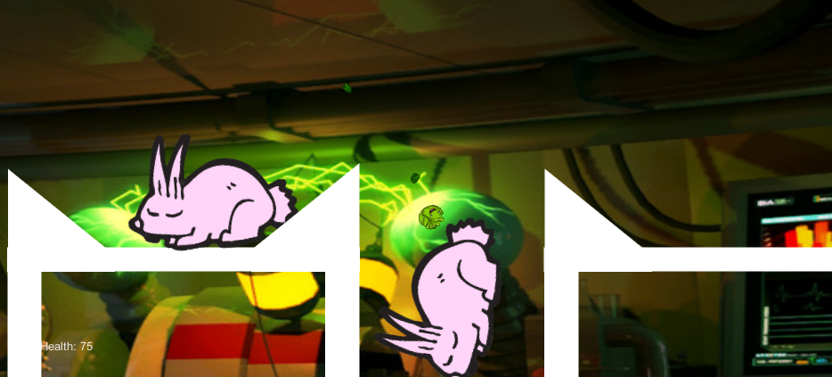

Leafy the Cabbage
Unconventional Weapon - LDJAM #32
View on GitHub
Download and Play
Leafy is a cabbage with super powers! Help him escape the mad scientist laboratory!
==Controls==
[A] and [D] to move
[Shift] to move faster
[Space] to Jump
[/] to shoot
[E] to explode!
[Esc] to quit.
   